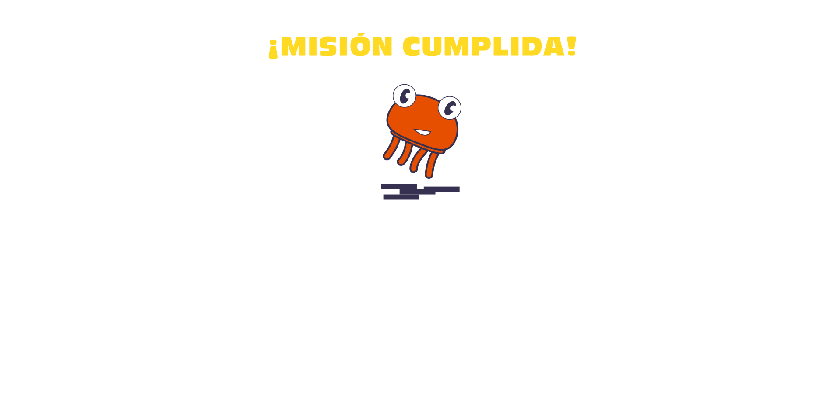
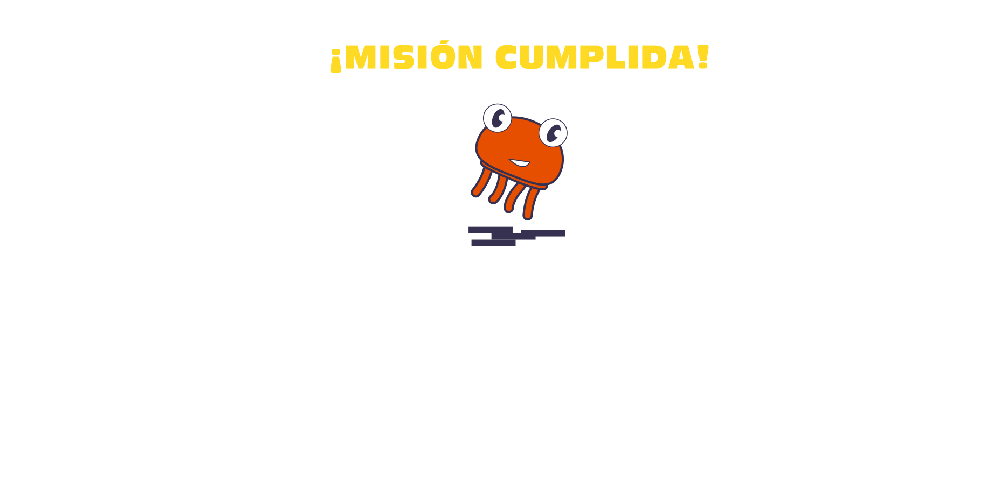
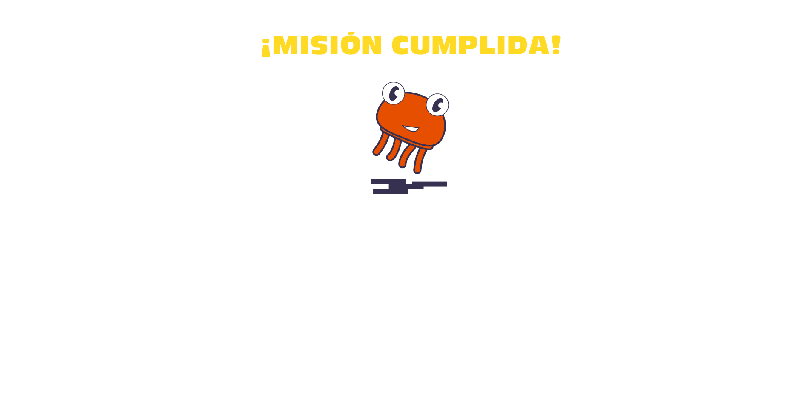

Cami (14 años) y Sebas (19 años) se encontraron en línea y desde entonces no han dejado de conectarse! 🎮 Él la agregó como amiga y comenzaron a jugar juntos todos los días. 💫✨

¡Sebas sorprendió a Cami dentro del juego con el regalo que siempre soñó: ¡gemas doradas! 💎✨ Ella siempre había deseado tenerlas, pero no tenía dinero para comprarlas. 🤩
¡Con los días, Sebas le pidió el número de teléfono a Cami y comenzaron a hablar por WhatsApp! 📱 La conexión que tenían en el juego se extendió más allá de la pantalla, y la diversión continuó en cada mensaje que compartían 🌟

Cami y Sebas tenían una relación a distancia. Sebas constantemente le pedía fotos
Cada vez que discutían por
las fotos, Sebas le dejaba de hablar por varios días y tampoco le
enviaba regalos en el juego.
Al final, Cami accedió... Aunque no se sentía cómoda.